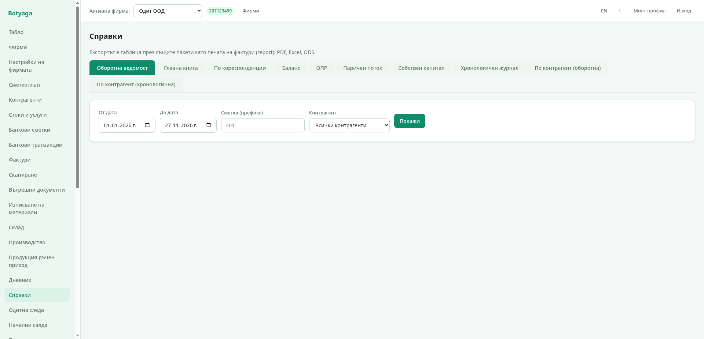

Начало · Справки
Справки
Оборотни, главна книга, по сметка/контрагент, баланс, ОПР.
Оборотна ведомост по сметка: при избрана сметка се виждат нейните контрагенти под нея. Главна книга и хронологичен журнал, по кореспонденции, по контрагент. Финансови отчети по формули (Баланс, ОПР, паричен поток, собствен капитал). Експорт в PDF/Excel/ODS. При големи файлове се използва поточно сваляне.
